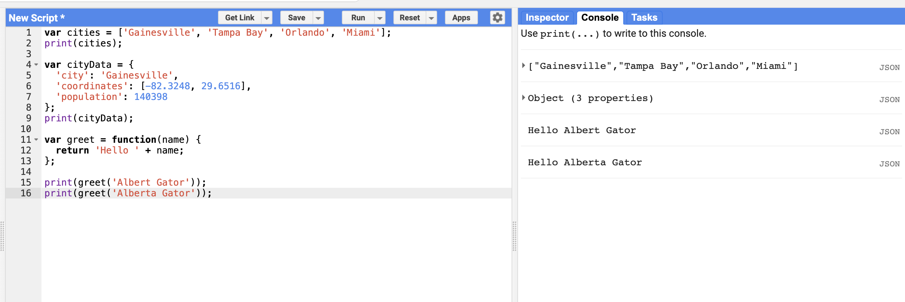

JavaScript Functions
Introduction to Functions
While using Earth Engine, you will need to define your own functions. Functions take user inputs, use them to perform some computation, and send output back.
Functions allow you to group a set of operations and repeat the same operations with different parameters without having to rewrite them every time. Functions are defined using the function keyword.
Defining a Function
The code below defines a function called greet that takes an input called name and returns a greeting with "Hello" prefixed to it:
var greet = function(name) {
return 'Hello ' + name;
};
print(greet('Albert Gator'));
print(greet('Alberta Gator'));The Power of Functions
Note that we can call the function with different inputs, and it generates different outputs with the same code. This is the power of functions: you can create blocks of code that act as tools.
Your output should look like this after running it in Earth Engine:

Function Anatomy
Let's break down the components of a function:
var functionName = function(parameter1, parameter2) {
// Function body - code to execute
var result = parameter1 + parameter2;
return result;
};- Variable assignment:
var functionName =stores the function in a variable - Function keyword:
functiondeclares that this is a function - Parameters:
(parameter1, parameter2)are inputs the function receives - Function body: Code between
{ }is executed when the function is called - Return statement:
returnsends a value back to whoever called the function
Why Use Functions?
- Reusability: Write once, use many times with different inputs
- Organization: Break complex code into manageable pieces
- Readability: Give meaningful names to operations
- Maintainability: Update functionality in one place
- Abstraction: Hide complex operations behind simple interfaces
Example: Temperature Conversion
Here's a practical example for remote sensing work - converting Celsius to Fahrenheit:
var celsiusToFahrenheit = function(celsius) {
var fahrenheit = (celsius * 9/5) + 32;
return fahrenheit;
};
// Convert some temperature values
print('0°C is', celsiusToFahrenheit(0), '°F');
print('20°C is', celsiusToFahrenheit(20), '°F');
print('100°C is', celsiusToFahrenheit(100), '°F');Functions in Earth Engine
In Earth Engine, you'll frequently use functions to:
- Process images: Apply calculations or filters to each image in a collection
- Map over collections: Apply the same operation to every image
- Calculate indices: Compute NDVI, NDWI, etc. for multiple images
- Cloud masking: Remove clouds from many images using the same logic
Example: NDVI Function
var calculateNDVI = function(image) {
var ndvi = image.normalizedDifference(['B5', 'B4']);
return image.addBands(ndvi.rename('NDVI'));
};
// Apply to an image collection
var collection = ee.ImageCollection('LANDSAT/LC08/C02/T1_L2')
.filterBounds(geometry)
.filterDate('2023-01-01', '2023-12-31')
.map(calculateNDVI);Try It Yourself
Practice creating functions:
- Write a function that takes two numbers and returns their average
- Create a function that converts meters to feet
- Make a function that takes a year and returns whether it's a leap year
- Build a function that calculates the area of a rectangle given length and width